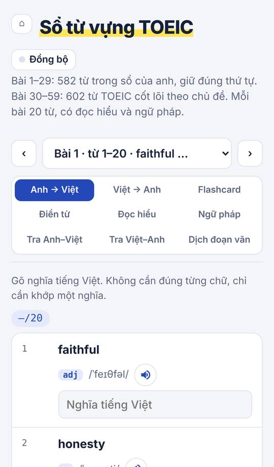
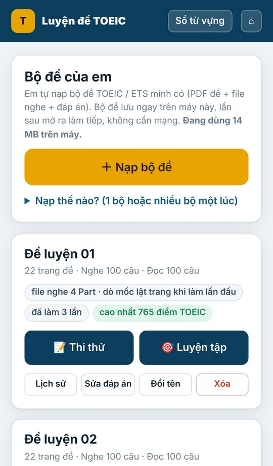
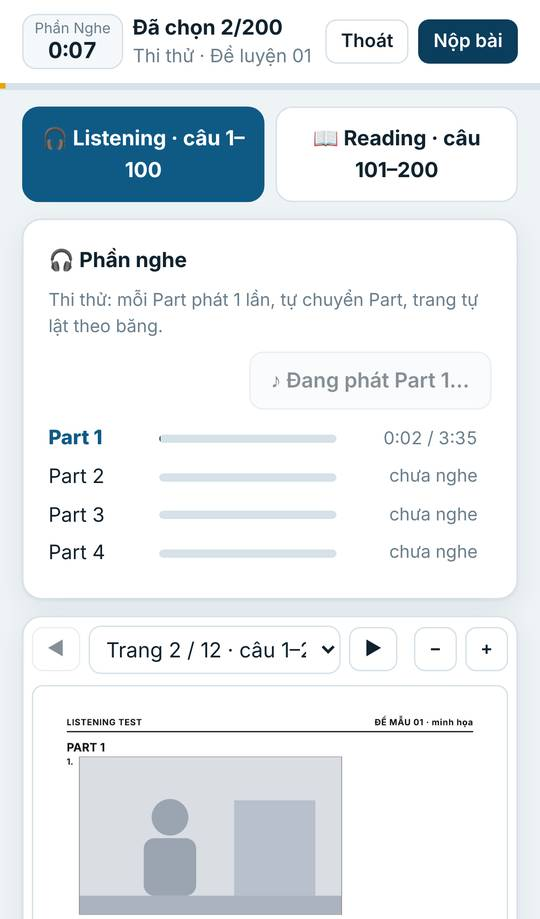
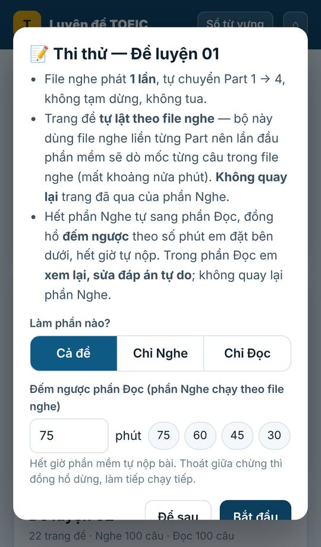
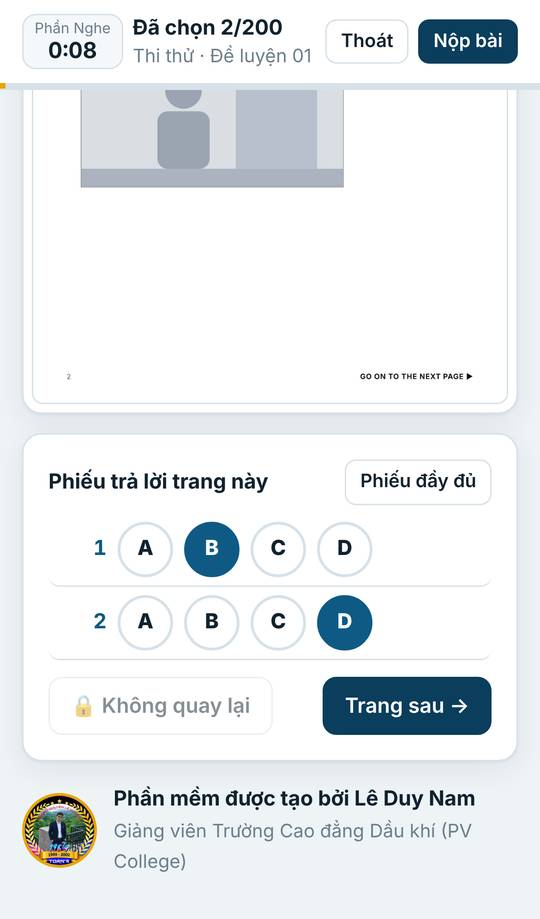
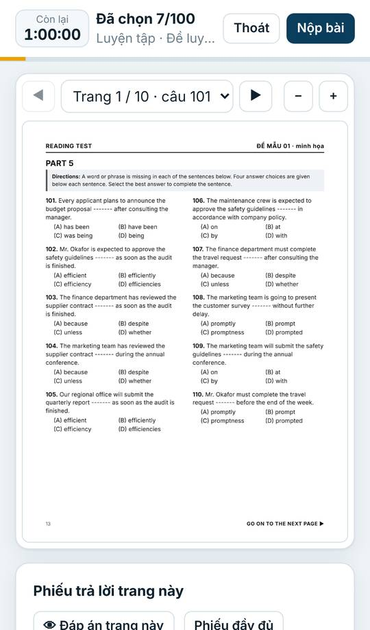
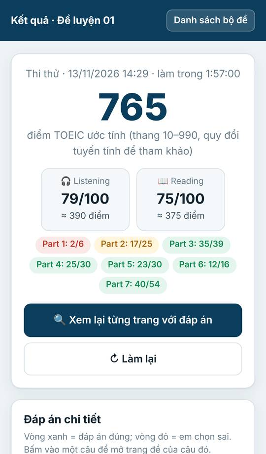

Tự học TOEIC — hướng dẫn sử dụng
Một phần mềm, hai việc: học từ vựng mỗi ngày và tự luyện đề TOEIC như thi thật. Không cần tài khoản, không cần đăng ký.
1 Mở phần mềm trên máy của em
⬇ Tải app Android (.apk)
📄 Tải bản giới thiệu & hướng dẫn dạng PDF (5 trang, để in hoặc gửi bạn bè)
Bộ đề và kết quả lưu ngay trên máy đang dùng, không gửi đi đâu. Đổi máy hoặc xóa dữ liệu trình duyệt thì phải nạp lại bộ đề.
2 Sổ từ vựng TOEIC
- 1.184 từ chia thành 59 bài, mỗi bài khoảng 20 từ: loại từ, phiên âm, nghe phát âm, từ đồng nghĩa / trái nghĩa.
- Chọn bài ở ô Bài…, rồi chọn kiểu học: Anh → Việt, Việt → Anh, Flashcard, Điền từ.
- Đọc hiểu (Part 7) và Ngữ pháp (Part 5) theo từng bài, có giải thích tiếng Việt.
- Bấm Kiểm tra để chấm, Làm lại câu sai để ôn đúng những từ chưa thuộc; câu hỏi được xáo trộn mỗi lần.
- Tra Anh–Việt / Việt–Anh và Dịch đoạn văn ngay trong sổ.
Mẹo: mỗi ngày học 1 bài (20 từ) theo thứ tự Flashcard → Anh–Việt → Điền từ, hôm sau làm lại câu sai của bài cũ trước khi sang bài mới.

3 Nạp bộ đề TOEIC của em
Phần mềm không kèm sẵn bộ đề. Em nạp bộ đề mình có (sách luyện thi, đề thầy cô gửi). Một bộ đề gồm: PDF đề (Listening, Reading), file nghe .mp3, file đáp án (PDF, Word, .txt hoặc ảnh chụp bảng đáp án).
- Vào Luyện đề TOEIC → bấm ＋ Nạp bộ đề.
- Nạp một bộ: chọn file .zip của bộ đề, hoặc chọn cùng lúc các file PDF + mp3 + đáp án → Bước tiếp: đọc file PDF đề → Lưu bộ đề vào máy.
- Nạp nhiều bộ một lúc: chọn file .zip có nhiều Test (trên máy tính có thể chọn cả thư mục) → bấm ⚡ Nạp tất cả, để nguyên màn hình đến khi báo xong (khoảng 1–2 phút mỗi bộ).
PDF dạng ảnh scan: phần mềm không đọc được số câu, em điền “câu đầu mỗi trang” (vd 101, 109, 121…) ở bước đọc PDF hoặc bấm Sửa đáp án ở bộ đề. Mỗi bộ chiếm khoảng 60–80 MB trên máy.

4 Thi thử — như thi thật
- Bấm 📝 Thi thử ở bộ đề, chọn làm Cả đề / Chỉ Nghe / Chỉ Đọc và đặt đồng hồ đếm ngược (mặc định 75 phút cho phần Đọc).
- Bấm ▶ Bắt đầu phần nghe. File nghe phát một lần, tự chuyển Part 1 → 4, không tạm dừng, không tua.
- Trang đề tự lật theo file nghe — ngay khi băng sang câu ở trang sau. Em tô đáp án ở Phiếu trả lời ngay dưới trang đề. Không quay lại trang đã qua.
- Hết phần Nghe, phần mềm tự sang phần Đọc và bắt đầu đếm ngược. Trong phần Đọc em lật tới, lật lui, sửa đáp án tự do.
- Bấm Nộp bài, hoặc hết giờ phần mềm tự nộp.
Bộ đề chỉ có file nghe liền từng Part: lần đầu mở, phần mềm dò mốc từng câu trong file nghe (vài giây đến nửa phút) để biết lúc lật trang.




5 Luyện tập — học từ chỗ sai
| 📝 Thi thử | 🎯 Luyện tập | |
|---|---|---|
| File nghe | Phát 1 lần, không dừng | Tạm dừng, tua ±10 giây, nghe lại từng Part, đổi tốc độ 0,75× – 1,25× |
| Trang phần Nghe | Tự lật, không quay lại | Tự lật (tắt được), quay lại trang trước thoải mái |
| Phần Đọc | Xem lại, sửa đáp án tự do | |
| Đáp án | Xem sau khi nộp | Bấm 👁 Đáp án trang này để kiểm tra ngay |
| Đồng hồ | Đếm ngược, hết giờ tự nộp | Tự đặt số phút, hoặc để 0 = không giới hạn |
Thoát giữa chừng: bài làm được giữ lại, đồng hồ dừng. Lần sau bấm ▶ Làm tiếp bài đang dở.
6 Kết quả và xem lại
- Chấm ngay sau khi nộp: số câu đúng Listening, Reading, từng Part và điểm TOEIC ước tính (thang 10–990, quy đổi tuyến tính để tham khảo).
- Đáp án chi tiết: vòng xanh là đáp án đúng, vòng đỏ là câu em chọn sai. Bấm vào một câu để mở lại đúng trang đề của câu đó, nghe lại đoạn băng.
- Lịch sử: xem lại mọi lần làm để thấy mình tiến bộ thế nào.

7 Hỏi đáp nhanh
- Có cần mạng không?
- Cần mạng lần đầu mở trang. Sau khi đã nạp bộ đề, làm bài không cần mạng. Bản Android (.apk) chạy hoàn toàn không cần mạng.
- Trang đề không tự lật?
- Kiểm tra bộ đề có file nghe chưa, và phần Nghe đã có “câu đầu mỗi trang” chưa (thẻ bộ đề sẽ báo đỏ nếu thiếu — bấm Sửa đáp án để điền). Khi Luyện tập, nhớ để dấu tích Tự lật trang theo file nghe.
- Điểm bị thấp bất thường?
- Có thể file đáp án bị đọc lệch. Bấm Sửa đáp án ở bộ đề để xem và sửa lại bảng đáp án.
- Máy báo hết chỗ lưu?
- Xóa bớt bộ đề đã làm xong (nút Xóa ở bộ đề) rồi nạp bộ mới.
- Người khác có xem được bài của em không?
- Không. Bộ đề, bài làm và điểm chỉ nằm trên máy của em.